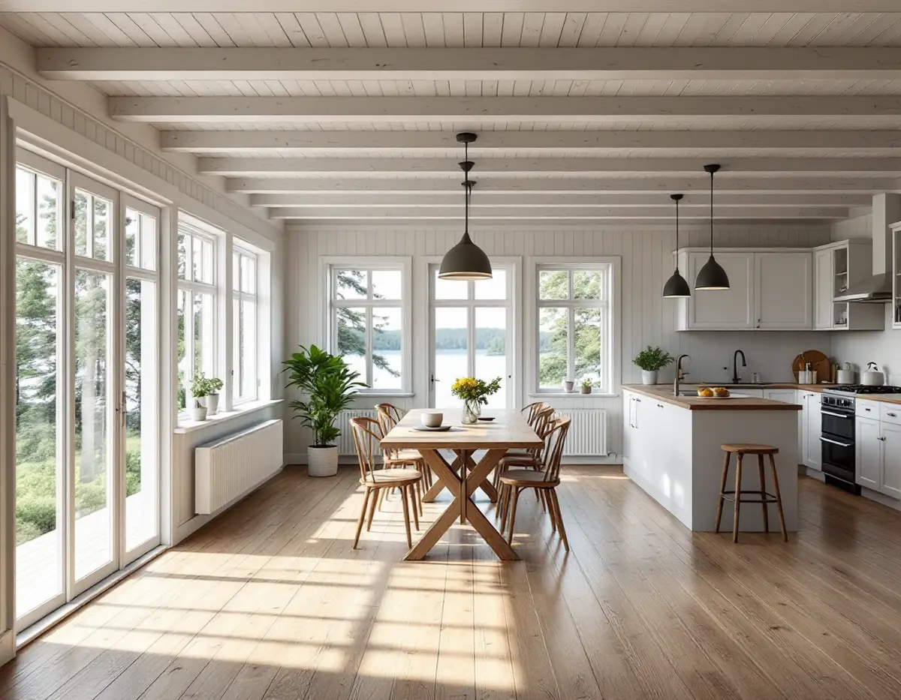
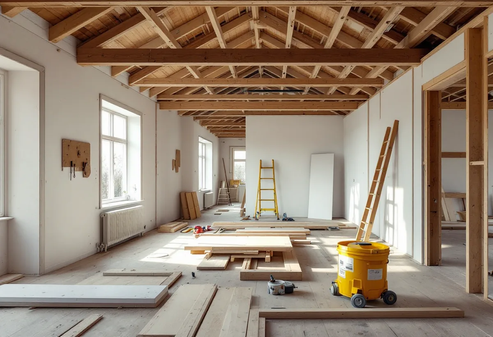

Platsbesök
Vi går igenom huset och bedömer hur mycket av stommen som kan stå kvar.
När en villa är sliten genom hela huset kommer frågan om det är bättre att riva och bygga nytt. Ett alternativ är att behålla stommen och bygga om resten. Geal Entreprenad AB tar totalrenoveringar av villor på Lidingö som en total entreprenad, och vi hjälper dig att se var gränsen går – både tekniskt och för rotavdraget.

Skatteverket ställer ett tydligt krav för att arbete med att bygga om och bygga till ett småhus ska ge rotavdrag: större delen av den ursprungliga byggnadsstommen på huset ska behållas, och huset ska vara äldre än fem år. Att riva ett hus ger inget avdrag, inte ens om ett nytt byggs upp på den gamla stommen.
Gränsen påverkar alltså hur projektet ska läggas upp. Kan bjälklag, ytterväggar och tak stå kvar medan rummen byggs om inifrån, behålls mycket av stommen. Ska större delen av stommen bort uppfylls inte Skatteverkets krav, och för att bygga ett helt nytt hus ges inget rotavdrag. Vi bedömer stommen tidigt, innan några beslut om rivning fattas.
Femårsregeln är sällan ett problem på äldre villor, men Skatteverket påpekar att det är husets värdeår som räknas. Det framgår av det senaste fastighetstaxeringsbeslutet.

Lidingö stad listar de åtgärder som kräver anmälan till miljö- och stadsbyggnadskontoret. Det gäller bland annat rivning av en byggnad eller en del av en byggnad, om byggnaden har en byggnadsarea som är större än 50 kvadratmeter, ändringar som väsentligt påverkar de bärande delarna eller brandskyddet, och installation eller väsentlig ändring av hiss, eldstad, rökkanal, ventilation, vattenförsörjning eller avlopp.
En anmälningspliktig åtgärd får inte påbörjas innan byggnadsnämnden har gett startbesked, och de delar som omfattas får inte tas i bruk förrän det finns ett slutbesked, om nämnden inte beslutar annat. I en totalrenovering påverkar det tidplanen: inflyttningen i de ombyggda delarna ska planeras efter slutbeskedet. Gäller projektet även en tillbyggnad finns mer under tillbyggnad på Lidingö.
Enligt stadens frågor och svar om kulturmiljöprogrammet finns äldre byggnadsinventeringar för enskilda byggnader, dels från 1970- och 1980-talet, dels från 2013–2015. Kontaktar du kundcenter för miljö- och stadsbyggnadskontoret kan du be att få ta del av beskrivningar som finns för din fastighet. På Lidingö finns också nio byggnadsminnen, och för dem är det länsstyrelsen som beslutar om tillstånd till förändringar.
Staden påpekar att en särskilt värdefull byggnad inte får förvanskas enligt plan- och bygglagen, även när ändringen inte kräver bygglov. Det är skäl nog att läsa inventeringen innan väggar rivs. Om husen och kulturmiljön i stort finns mer under byggföretag på Lidingö.
När stommen får stå kvar går det ändå att förändra det mesta. Rotavdrag ges enligt Skatteverket för att riva väggar och bygga om planlösningen och för att tilläggsisolera, och för att montera fast köks- och badrumsinredning i samband med omfattande renovering. Kök och badrum beskriver vi närmare under köksrenovering på Lidingö och badrumsrenovering på Lidingö.
Vi börjar med att öppna på några ställen och se hur bjälklag och väggar mår. Därefter bestämmer vi tillsammans med dig vad som byggs om och vad som får vara kvar, och lägger upp arbetet så att anmälan, startbesked och slutbesked passar in i tidplanen.
Vi går igenom huset och bedömer hur mycket av stommen som kan stå kvar.
Du begär ut eventuell byggnadsinventering, och vi läser den tillsammans.
Rivning, ombyggnad och installationer redovisas var för sig.
Det som kräver anmälan anmäls innan arbetet börjar.
Stommen behålls, och rum, installationer och ytskikt byggs om – el och VVS via behöriga.
De anmälda delarna tas i bruk efter slutbesked, och vi går igenom huset med dig.
För ombyggnad av ett småhus ska större delen av den ursprungliga stommen behållas och huset vara äldre än fem år. Inget avdrag ges för att riva huset, för bygglovshandlingar eller för att anlita arkitekt, kvalitetsansvarig eller besiktningsman.
Företaget får dra av högst 30 procent av arbetskostnaden på fakturan. Rotavdraget är högst 50 000 kr per person och år och högst 75 000 kr tillsammans med rutavdrag. Material och resor ger inget avdrag. Geal drar avdraget direkt på fakturan.
Hur mycket av stommen som kan behållas, omfattningen av installationerna, kraven i en eventuell byggnadsinventering och vilken standard du väljer påverkar mest. Efter ett gratis platsbesök får du ett skriftligt kostnadsförslag.
Renovera hela huset eller lägenheten.
Villarenovering →Takbyte, takbesiktning och plåtarbeten.
Takläggare på Lidingö →Brevik, Mölna och Käppala.
Takrenovering på Lidingö →Värdefulla hus, kulör och bidrag.
Fasadmålning på Lidingö →Villastäderna och Brevik på Lidingö.
Fönsterbyte på Lidingö →Slipa och behandla trägolv i kök och hall.
Golvslipning på Lidingö →Plåt i vind och värdefulla miljöer.
Plåtslagare på Lidingö →Ny tapet med hänsyn till huset.
Tapetsering på Lidingö →Webbkartan, programmet och frivilligt lov.
Tillbyggnad på Lidingö →Villastad, källarbadrum och gästhus.
Badrumsrenovering på Lidingö →Villastäder, radhusbyar och berg.
Byggföretag på Lidingö →Radhus, villor och putsfasader på Lidingö.
Fasadrenovering på Lidingö →Souterrängvillor, radhus och äldre villor på Lidingö.
Golvläggare på Lidingö →Villastäder, souterräng och radhusbyar.
Köksrenovering på Lidingö →Villastäder, radhusbyar och stugor på Lidingö.
Målare på Lidingö →Verandor, trappor och dörrar.
Snickare på Lidingö →